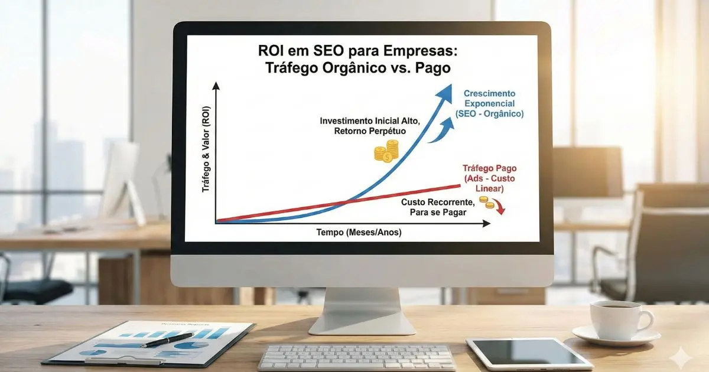

Você já se perguntou por que alguns concorrentes vendem todos os dias sem gastar um centavo com anúncios, enquanto o seu site parece invisível? A resposta não está na sorte. Está na engenharia.
Bem-vindo à EmpresaSEO. Não somos apenas uma agência digital; somos uma empresa de SEO focada em transformar o código e o conteúdo do seu site em um ativo financeiro de alto rendimento.
No mercado atual, ter um site bonito não é suficiente. Se o Google não o encontrar, seu cliente também não o encontrará. Nosso trabalho como empresa especializada em SEO é garantir que sua marca seja a resposta padrão para as dúvidas do seu consumidor.

O Que Faz uma Empresa de SEO de Verdade? (AEO Definition)
Ao contrário do que muitos pensam, uma empresa de posicionamento SEO não "vende o primeiro lugar no Google". Quem promete isso está mentindo ou usando técnicas perigosas (Black Hat).
O papel real de uma consultoria de SEO avançada para empresas é alinhar a tecnologia do seu site com a psicologia do seu cliente. Nós otimizamos três pilares fundamentais:
- Técnica: Garantimos que o site seja rápido, seguro e legível para os robôs do Google através de SEO técnico.
- Conteúdo: Criamos textos que respondem a intenção de busca melhor do que ninguém através de marketing de conteúdo.
- Autoridade: Construímos a reputação da sua marca através de menções e links externos com link building.
Por que sua empresa precisa disso agora?
O comportamento do consumidor mudou. Hoje, 93% das experiências online começam em um motor de busca. Se você quer melhorar o desempenho SEO do site da empresa, você não está apenas buscando "cliques"; você está buscando sobrevivência e relevância no mercado digital.
SEO x Tráfego Pago: Qual o melhor investimento?
| Critério | Tráfego Pago (Ads) | SEO (Busca Orgânica) |
|---|---|---|
| Custo | Aluguel (Para de pagar, para de aparecer). | Patrimônio (O tráfego continua chegando). |
| Confiança | Baixa (Usuários sabem que é anúncio). | Alta (Usuários confiam na recomendação do Google). |
| Longo Prazo | Custo aumenta com a concorrência. | Custo de aquisição diminui com o tempo. |
SEO para Pequenas Empresas: Davi contra Golias
Muitos gestores acreditam que o SEO é um jogo apenas para gigantes. Isso é um mito. Na verdade, o SEO para pequenas empresas é a única ferramenta que permite competir de igual para igual com grandes corporações.
Como uma agência de SEO para pequenas empresas, nossa estratégia é focar na especificidade. Enquanto os grandes brigam por termos genéricos como "sapatos", nós posicionamos sua agência de seo pequena empresa para termos de alta intenção de compra, como "sapato de couro artesanal em São Paulo".
Estratégias de SEO Empresa por Empresa
Não existe "receita de bolo". A estratégia muda radicalmente dependendo do seu modelo de negócio.
1. SEO Local para Empresas (Negócios Físicos)
Se você tem uma porta para a rua, você precisa dominar o Google Maps. Como uma empresa de SEO em SP (e atendendo todo o Brasil), sabemos que a busca "perto de mim" cresceu 500% nos últimos anos.
Nosso foco em SEO local para empresas envolve otimizar seu Perfil da Empresa no Google (antigo GMB), garantir consistência de NAP (Nome, Endereço, Telefone) e gerar avaliações autênticas. Se você procura uma agência seo para pequenas empresa sp, a geolocalização é a chave do sucesso.
2. SEO B2B e Corporativo
Para grandes organizações, o desafio é técnico e semântico. Nossa consultoria de SEO avançada para empresas foca em arquitetura da informação, clusters de conteúdo e link building de alta autoridade para posicionar sua marca como líder de pensamento no setor (Thought Leadership).
Nossos Serviços: O Ecossistema Completo de SEO
Para ser a melhor empresa de SEO para o seu negócio, não oferecemos pacotes engessados. Oferecemos soluções modulares que atacam exatamente onde seu site está falhando.
Confira abaixo nosso catálogo de serviços especializados. Cada card leva a uma explicação detalhada de como podemos ajudar:
Auditoria Técnica SEO
Um check-up completo da saúde do seu site. Descobrimos erros técnicos, links quebrados e problemas de indexação que estão invisíveis aos olhos.
→ Ver DetalhesOtimização On-Page
Ajuste fino de títulos, meta tags, imagens e estrutura de heading tags (H1, H2) para garantir que o Google entenda seu conteúdo.
→ Ver DetalhesSEO Técnico & Speed
Velocidade do site é fator de rankeamento. Otimizamos o Core Web Vitals para que seu site carregue instantaneamente no celular.
→ Ver DetalhesMarketing de Conteúdo
Criação de artigos, guias e páginas de vendas focadas na intenção do usuário e na autoridade temática (Topical Authority) através de marketing de conteúdo.
→ Ver DetalhesLink Building & PR
Estratégias de Digital PR e aquisição de backlinks de alta qualidade e seguros para aumentar a autoridade de domínio.
→ Ver DetalhesSEO Local (G. Maps)
Domine o seu bairro e cidade. Otimização completa do Perfil da Empresa no Google para atrair clientes próximos.
→ Ver DetalhesCRO e UX Design
Não adianta trazer visitas se elas não compram. Otimizamos a experiência do usuário para aumentar sua taxa de conversão.
→ Ver DetalhesConsultoria de Dados
Relatórios que você entende. Análise de Business Intelligence (BI) para tomar decisões baseadas em dados reais.
→ Ver DetalhesServiços Extras
Criação de sites, gestão de tráfego pago integrado e recuperação de reputação online.
→ Ver DetalhesA Ciência por trás do SEO Empresas
A internet é um ecossistema vivo. O algoritmo do Google é atualizado milhares de vezes por ano. O que funcionava em 2020 pode punir seu site em 2026. É por isso que contratar um "sobrinho" ou um generalista é arriscado.
Na EmpresaSEO, nós respiramos algoritmos. Nossa equipe monitora diariamente as flutuações da SERP (Página de Resultados) para garantir que sua estratégia esteja sempre à prova de futuro.
O Fim das Métricas de Vaidade
Muitas agências comemoram "impressões" ou "curtidas". Nós comemoramos Vendas. Nosso relatório mensal não é um papel para ser arquivado; é um mapa de crescimento. Mostramos exatamente quanto dinheiro o canal orgânico trouxe para o seu caixa.
Pronto para dominar o seu mercado?
Se você cansou de ver seus concorrentes na primeira página enquanto você fica na segunda, chegou a hora de mudar essa história.
Não importa se você precisa de seo para empresas multinacionais ou se é uma agência de seo pequena empresa buscando crescimento local. Nós temos o plano certo para o seu tamanho e ambição.
O melhor momento para começar o SEO foi há 5 anos. O segundo melhor momento é hoje. Vamos construir o futuro da sua empresa juntos?
Perguntas Frequentes sobre Contratar uma Empresa de SEO
Quanto tempo demora para ver resultados com SEO?
O SEO é um investimento de médio a longo prazo. As correções técnicas surtem efeito nas primeiras semanas. O crescimento de tráfego e posicionamento costuma ser consistente a partir do 4º ao 6º mês de trabalho contínuo. Desconfie de quem promete resultados imediatos ("Primeira página em 24h"), pois geralmente usam técnicas proibidas pelo Google.
Vale mais a pena investir em SEO ou Google Ads (Tráfego Pago)?
O ideal é ter os dois. O Google Ads gera vendas imediatas, mas para de funcionar assim que a verba acaba (Aluguel). O SEO demora mais para engrenar, mas constrói um ativo que continua gerando visitas gratuitas por anos (Casa Própria). A longo prazo, o SEO oferece o maior ROI (Retorno sobre Investimento).
A EmpresaSEO atende pequenas empresas locais?
Sim! Temos uma metodologia específica para Pequenas Empresas e Negócios Locais. Focamos em dominar a sua região geográfica (Bairro/Cidade) e nicho específico, o que traz resultados mais rápidos e baratos do que tentar competir nacionalmente contra gigantes.
O que é SEO White Hat e por que isso importa?
White Hat são as técnicas éticas e aprovadas pelo Google. Nós seguimos rigorosamente as diretrizes para garantir que seu site nunca sofra uma penalização. O contrário (Black Hat) pode fazer o site subir rápido, mas ele será banido do Google pouco tempo depois, destruindo seu negócio. Nós jogamos o jogo seguro.